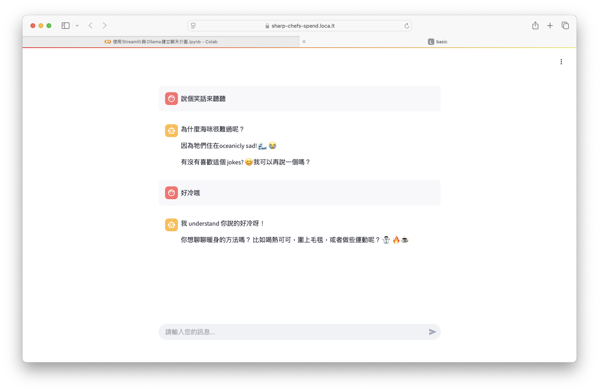
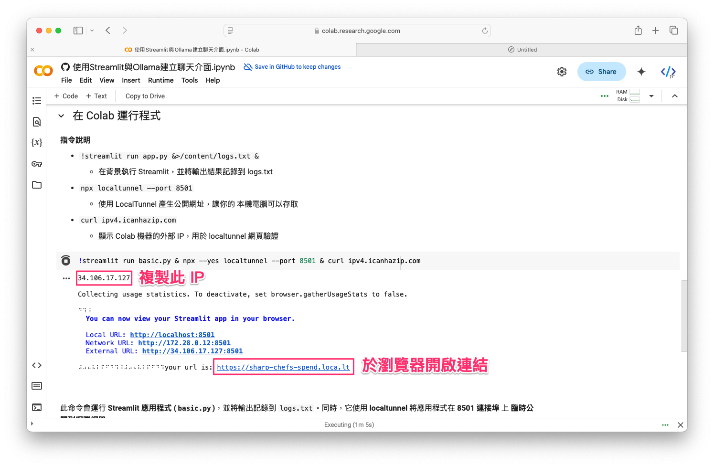
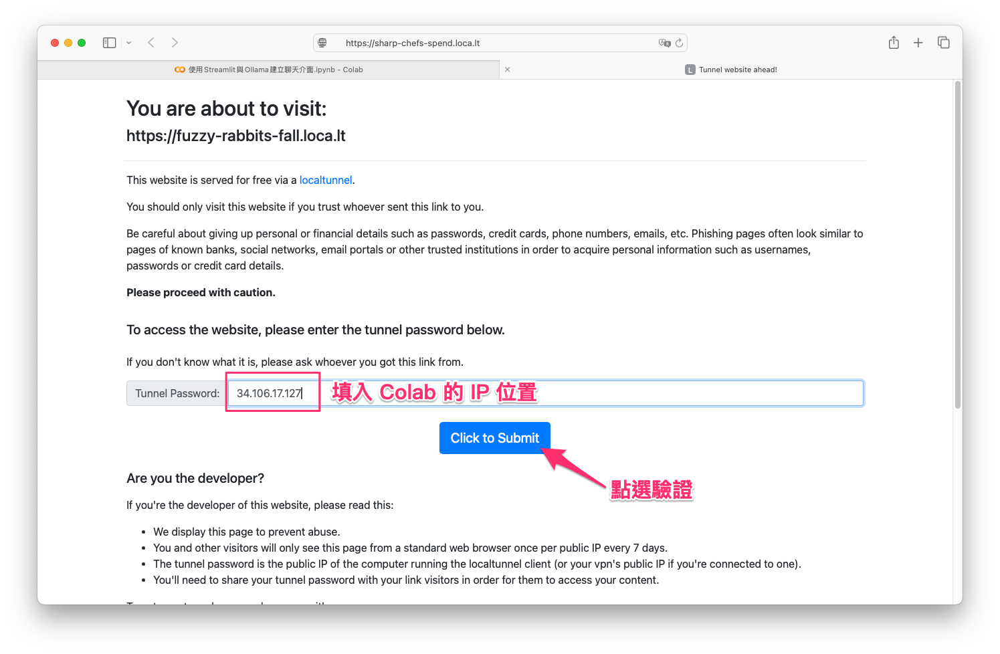

在 Colab 使用 Streamlit 與 Ollama 建立聊天介面
範例程式：
前言
本教學將介紹如何在 Google Colab 上運行 Streamlit，並透過 Ollama API 來建立一個簡單的 聊天介面。由於 Colab 無法直接執行 streamlit run，我們將使用 LocalTunnel 讓本機電腦可以存取 Colab 內運行的 Streamlit 應用。

此外，Ollama 服務可以運行在 本機端，也可以使用 遠端伺服器或其他 LLM API（如 OpenAI、FastChat） 來提供回應。
Info
在執行此程式之前，請先確保本機電腦已安裝並運行 Ollama，並下載所需的模型。
- 詳細內容請參考：Ollama 使用教學：在自己的電腦上運行大型語言模型
- 完成Ollama部署後後，即可在本機運行 Streamlit 應用，透過 Ollama API 與 LLM 模型(gemma2:9b)進行互動！
步驟 1：安裝必要套件
首先，在 Colab 內安裝 Streamlit：
步驟 2：程式概述
這支程式使用 Streamlit 建立一個 單輪對話介面，透過 Ollama API 來處理 AI 回應：
- 使用者輸入訊息，顯示在對話框內。
- 程式將訊息傳送至 Ollama API（本機端
11434連接埠），獲取 AI 回應。 - 顯示 AI 回應，並將對話內容儲存在
st.session_state，讓使用者能夠持續查看對話歷史。
Note
這是一個 本機 AI 助手，可以用來測試 Ollama 模型，或作為更進階應用的基礎。
步驟 3：建立 basic.py 並寫入程式
我們使用 魔術指令 (%%writefile) 在 Colab 內建立 basic.py，內容如下：
%%writefile basic.py
import os
from openai import OpenAI
import streamlit as st
# 設定 OpenAI API 金鑰與模型端點
token = "ollama"
endpoint = "http://localhost:11434/v1/"
model_name = "gemma2:9b"
client = OpenAI(base_url=endpoint, api_key=token)
# 單輪對話初始化的 system prompt
SYSTEM_PROMPT = {"role": "system", "content": "你是一個有用的助手。且會根據使用者輸入的語言做回應。"}
# 初始化對話歷史，僅用於顯示（不保存上下文）
if "display_messages" not in st.session_state:
st.session_state.display_messages = []
# 顯示對話歷史
for message in st.session_state.display_messages:
with st.chat_message(message["role"]):
st.markdown(message["content"])
# 接收使用者輸入
if user_input := st.chat_input("請輸入您的訊息..."):
# 顯示使用者訊息
st.session_state.display_messages.append({"role": "user", "content": user_input})
with st.chat_message("user"):
st.markdown(user_input)
# 組合單輪對話訊息
messages = [SYSTEM_PROMPT, {"role": "user", "content": user_input}]
# 調用 OpenAI API 獲取回應
response = client.chat.completions.create(
messages=messages,
model=model_name,
temperature=1.0,
top_p=1.0,
max_tokens=1000,
)
# 獲取助理回應內容
assistant_response = response.choices[0].message.content
# 顯示助理回應
st.session_state.display_messages.append({"role": "assistant", "content": assistant_response})
with st.chat_message("assistant"):
st.markdown(assistant_response)
步驟 4：替換 endpoint 以使用其他 LLM API（可選）
在這支程式中，endpoint 變數代表 大語言模型（LLM）API 的網址，它可以根據需求替換為：
- 本機端 Ollama (
localhost) - 遠端 Ollama（固定 IP）
- OpenAI API
- 其他自建 LLM 服務（如 FastChat、vLLM）
📌 endpoint 替換方式
| 環境 | 範例 endpoint |
|---|---|
| 本機 Ollama | http://localhost:11434/v1/ |
| 遠端 Ollama（固定 IP） | http://your-server-ip:11434/v1/ |
| OpenAI API | https://api.openai.com/v1/ |
步驟 5：啟動 Streamlit 並讓本機存取

執行以下指令：
📌 指令說明
!streamlit run basic.py &>./logs.txt &→ 在背景運行 Streamlit，並將日誌輸出到logs.txtnpx --yes localtunnel --port 8501→ 開放公開網址，讓本機存取 Colab 內的 Streamlitcurl ipv4.icanhazip.com→ 顯示 Colab 機器的外部 IP
步驟 6：取得公開網址並存取
執行上面的指令後，應該會顯示：
在 Colab 執行該命令後，應該會顯示類似以下的輸出內容：

請複製 IP 位址（例如 35.106.17.127），然後點擊產生的 URL，即可進入應用程式的頁面。
Info
在本機瀏覽器開啟該網址，即可使用 Streamlit 聊天介面！
下一步可以嘗試
上述範例是一個簡短的單向對話模式，使用者可以輸入問題後，AI 依 據設定的系統提示回應的答案，沒有額外的上下文標記功能。
從執行結果可以看到，當我們請 AI 「說個笑話」，它回應了一個關於海鷗的冷笑話。 接著，我回覆 「好冷喔」，我的意思是指 笑話很冷，但由於 AI 目前只支援 單輪對話，沒有記憶功能， 因此它無法理解「好冷喔」是對 上一個笑話的回應，而是將這句話當作一個新的輸入，並試圖根據當前的訊息進行回應，而不是理解這是一個對笑話的評價。因此，下一步可以嘗試：
- 讓機器人具有多輪對話的功能 (Run a multi-turn dialogue)，透過
st.session_state存儲對話歷史。 - 讓 AI 保持上下文，例如：傳遞完整的歷史對話給 LLM 來生成更有記憶性的回應。
這裡給個小練習，我們可以讓 AI 不只是單輪回答問題，而是能夠記住對話內容，並進行更流暢、自然的互動更像 ChatGPT！
總結
這支 Python 範例程式讓我們可以：
✅ 在 Google Colab 運行 Streamlit 應用
✅ 透過 LocalTunnel 產生公開網址，讓本機存取
✅ 使用 Ollama 來處理 AI 對話
✅ 自由替換 endpoint 來連接不同 LLM API
這樣，你就能透過 Colab 部署 Streamlit 聊天機器人，並在本機直接使用。此外，這支程式碼也可以在本機的 Python 環境下運行，無需依賴 Google Colab 或 LocalTunnel。 只需在本機電腦中執行 streamlit run basic.py，然後在瀏覽器打開 http://localhost:8501，即可直接存取聊天介面，與 Ollama 進行互動。